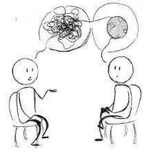

Le psychiatre est un tout d'abord un médecin. La psychiatrie est une spécialité médicale traitant de la maladie mentale. La psychiatrie comprend le diagnostique, le traitement et la prévention des troubles mentaux. En incluant les divers troubles cognitifs, comportementaux et affectifs.
Le psychiatre est un tout d'abord un médecin.
Le psychiatre peut exercer dans plusieurs secteur comme le secteur public, privé, libéral, médico-social, équipes mobiles, activité d’expertise, psychiatrie de secteur, urgence, addictologie, pédopsychiatrie, unités mères/ bébés, périnatalité, parentalité, psychiatrie de la personne âgée, ethno-psychiatrie, SMPR (Service Médico-Psychologique Régional pourles détenus), UHSA (Unités d’hospitalisation Spécialement Aménagées pour les détenus), UMD (Unités pour Malades Difficiles), psycho-oncologie dans les centres de lutte contre le cancer...
En seconde, il faut choisir 3 spécialités,malheureusement, il n'y a pas de spécialité "psychiatrie" ou "psychologie", mais, certaines spécialités restent intéressantes, par exemple il est recommandé de prendre les spécialités scientifiques :
Cependant il est important de se démarquer avec des choix comme :
Les études à suivre pour devenir psychiatre sont assez longues, soi 10 ans d'études au total. Mais ne vous inquiétez pas, comme dit la célèbre phrase de Conficius : "Choisissez un travail que vous aimez et vous n'aurez pas à travailler un seul jour de votre vie."
Alors tout d'abord, il faudra commencé par un cursus de médecine, puis ensuite se spécialiser en pédiatrie pour avoir des diplômes : un diplôme d'études (DE) de docteur en médecine et un diplôme d'études spécialisées (DES) de psychiatrie.
Suite à ça, il est possible pour un psychiatre de se spécialiser, il peut par exemple devenir pédopsychiatre ou bien psychanalyste.
Pour plus d'information cliquez sur l'image ci-dessous
